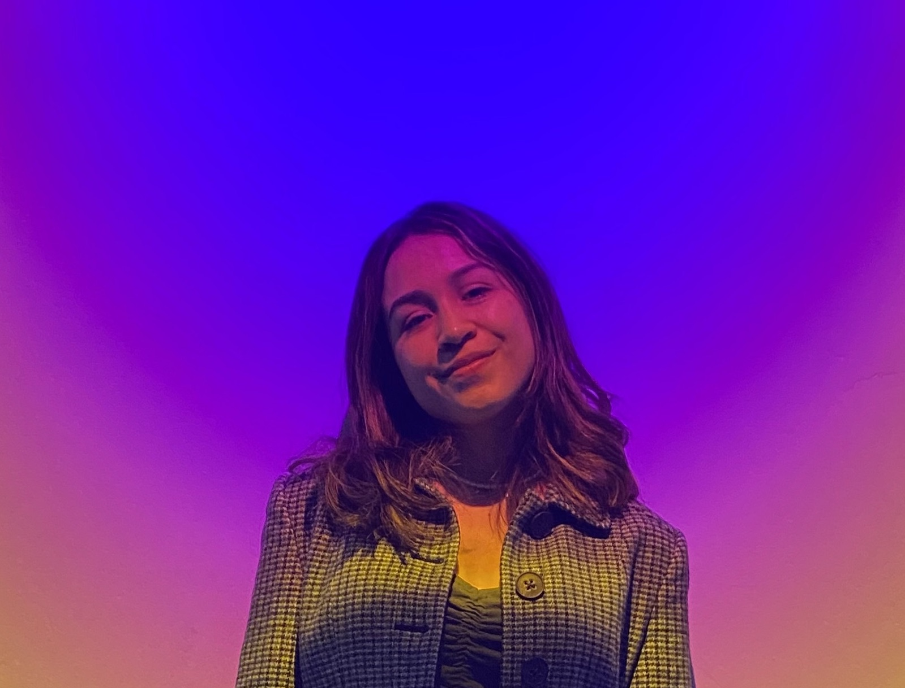
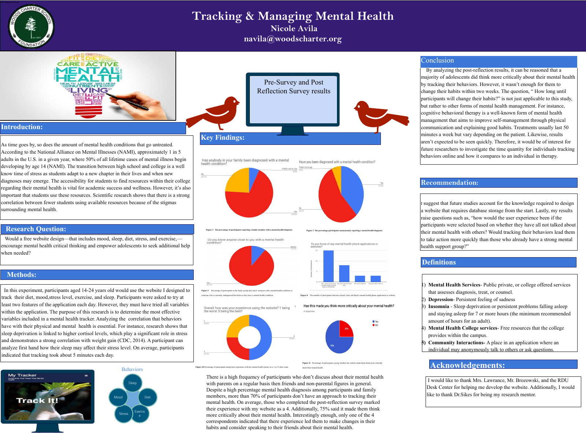
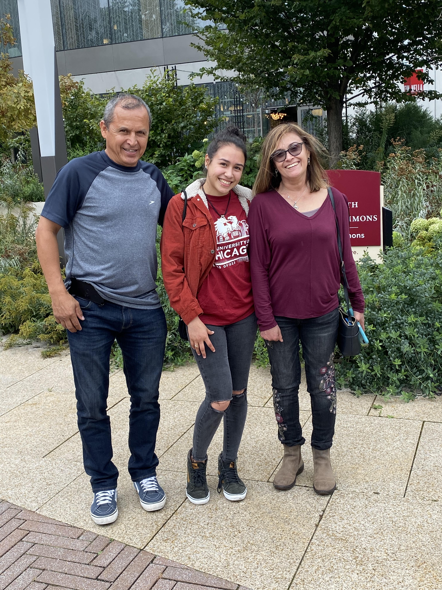
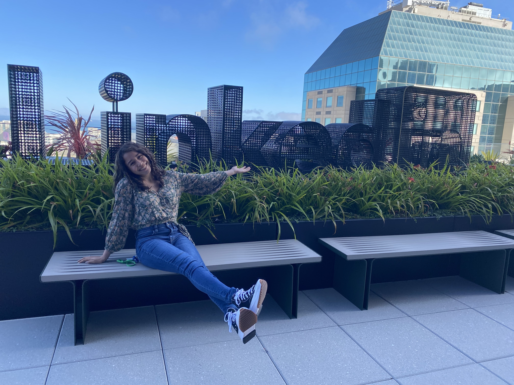
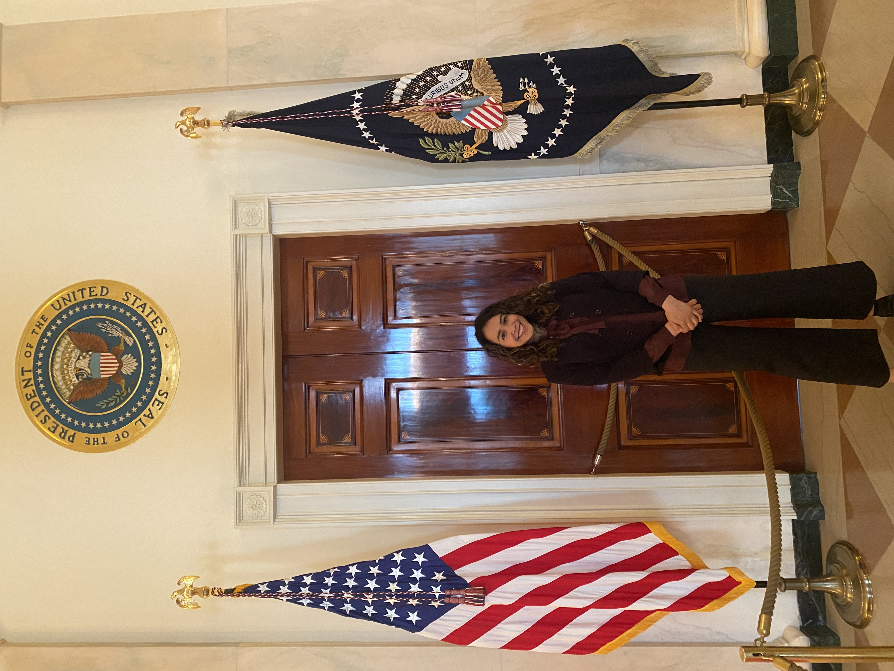
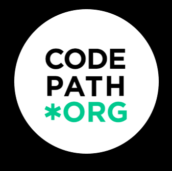
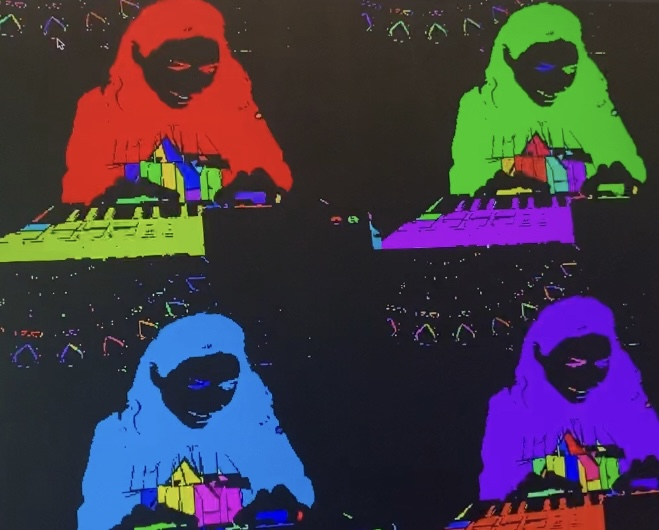

Software engineer · creative technologist
Hey there, bienvenidos.
I’m

Research origins
Witnessing my brother’s mental health struggles growing up sparked my interest in how we can better support young people. I was determined to explore this question, even taking a summer psychology course so I could enroll in AP Research. Through the project, I investigated whether tracking habits like sleep, diet, anxiety, and mood could encourage adolescents to reflect on their mental health and seek additional help when needed.
One participant shared that using my site encouraged him to open up to friends and that he wanted to continue tracking. His response stayed with me and motivated me to persevere in computer science.

Education & perspective
I wanted the independence to bring my ideas to life and create tools that could reach people beyond my community. I am a first-generation college student, and I attended the University of Chicago on a full-ride scholarship. I double majored in Computer Science and Media Arts & Design with specializations in HCI and Electronic Music.
Each discipline shaped how I approach problems. Computer Science gave me the technical foundation to build solutions, while HCI taught me to research, question assumptions, and understand people before jumping into implementation. Media Arts & Design encouraged me to ask “what if?”, examine how media shapes our experiences, and experiment with ideas simply to discover what’s possible.

Learning across industries
As the first in my family to enter the corporate world, I explored software engineering across public service, big tech, and financial technology to broaden my perspective.
At the Centers for Medicare & Medicaid Services, I learned that building a tool can be easier than navigating communication and differences in technical understanding. Later, working at investment firms taught me to connect engineering and design decisions with business impact. Sometimes this meant pitching ideas with prototypes or using concrete figures to show potential cost reductions.


Mentorship & learning
Mentorship has also shaped how I think about technology. Through teaching and supporting new graduates, I’ve come to value learning as more than finding the right answer. As AI becomes more integrated into software development, I’m curious about how agents can help junior developers develop their own reasoning and judgment rather than simply complete tasks for them.

Current interests
Today, I’m exploring human-centered AI and creative technology, with a focus on how AI and social media shape human decision-making, learning, and connection.
Beyond engineering, I love singing, songwriting, improv, and ultimate frisbee!

Let’s connect.
I’m always happy to have a conversation, whether in person or over Zoom.